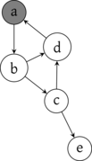
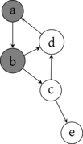
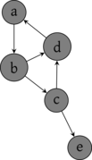
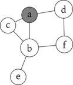
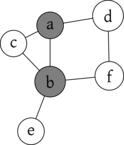
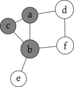
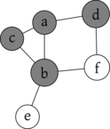
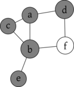
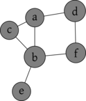

Graphes

1 Graphes orientés
1.1 Définition
On représente graphiquement un graphe sous la forme d’un diagramme sagittaire où les sommets sont des points et où une arêtes \((a,b)\) est une flèche allant du point \(a\) au point \(b\).


1.2 Voisins et degrés
\[ A = \bigcup_{x \in S} \enscomp{(x,y)}{y \in S, (x,y) \in A} = \bigcup_{x \in S} \enscomp{(x,y)}{y \in v_+(x)} \]
Et en prenant la cardinal de cette égalité, on obtient directement \(|A| = \sum_{x \in S} d_+(x)\). L’autre égalité est symétrique en considérant les arêtes de même but.
1.3 Chemin
Soient \(x, y \in S\) et \(\varphi = (s_0, \dots, s_p) : x \leadsto y\).
Comme \(s_{i-1} \rightarrow s_i\) on a \(s_{i-1} R s_i\) et, par transitivité, \(x = s_0 R s_p = y\). Donc \(x \leadsto y \Rightarrow x R y\).
Ainsi \(\leadsto \subset R\).
On dit que \(\leadsto\) est la clôture réflexive et transitive de \(\rightarrow\).
1.4 Sous-graphe
1.5 Implémentation
1.5.1 Énumération de sommets
Si on considère un graphe \(G = (S,A)\), il est assez naturel de représenter ses sommets dans un tableau. Pour cela, on fixe naturellement un ordre sur ces sommets et on va associer à chaque sommet son indice dans le tableau.
Par exemple, si \(S = \{ a, b, c, d\}\) on va pouvoir considérer [ a, b, c, d ] et ainsi associer à a son indice 0 dans le tableau. L’ordre est arbitraire, on aurait pu considérer [ b, c, a, d ] et l’indice de a aurait alors été 2.
Ce qui compte, c’est de pouvoir travailler directement sur les indices et pas sur les éléments. Une manière de s’en convaincre est d’imaginer le graphe d’un réseau social où un sommet correspond au profil d’une personne, et contient donc beaucoup (trop) d’informations. Il est bien plus raisonnable de lui associer un identifiant unique et d’utiliser cet identifiant ensuite.
Quand on va implémenter des graphes, on peut donc supposer que les sommets sont les entiers de 0 à n-1 où \(|S| = n\). Il sera toujours possible de retrouver la correspondance avec les sommets eux-mêmes.
1.5.2 Matrice d’adjacence

On en déduit ainsi une implémentation directe d’un graphe en représentant la matrice d’adjacence comme l’a fait pour des images.
m = [ [ 0, 1, 1, 1 ],
[ 1, 0, 0, 1 ],
[ 0, 0, 0, 1 ],
[ 1, 1, 0, 0 ] ]let m = [| [| 0; 1; 1; 1 |];
[| 1; 0; 0; 1 |];
[| 0; 0; 0; 1 |];
[| 1; 1; 0; 0 |] |]Cette représentation permet d’accéder, en lecture comme en écriture, à une arête en temps constant. Cependant, pour récupérer les voisins d’un sommet, il est nécessaire de parcourir toute la ligne correspondante, donc en \(O(|S|)\).
1.5.3 Listes d’adjacences
La donnée de \(v_+(x)\) pour chaque sommet \(x \in S\) suffit à reconstruire \(A\).

On en déduit ainsi une représentation d’un graphe où on place dans un tableau chaque \(v_+(x)\) représenté par une liste chaînée ou un tableau dynamique.
L’accès en lecture ou en écriture à une arête est alors en \(O(|A|)\) mais on peut parcourir les voisins sortant en \(O(|A|)\) également. Pour un sommet donné, on peut même préciser \(O(d_+(x))\). Accéder à la liste peut même se faire en \(O(1)\).
Pour obtenir les voisins entrants, il est par contre nécessaire de tester la présence de \(x\) dans chacune des autres listes, on obtient donc un algorithme en \(O(|S| + |A|)\) : on parcourt chaque case du tableau des listes puis chaque maillon de listes d’adjacence.
Il est possible d’améliorer cela en utilisant un structure plus efficace pour stocker les ensembles. Cela peut-être un dictionnaire reposant sur une table de hachage. L’avantage de cela est que pour tester l’appartenance \(y \in v_+(x)\) on sera en \(O(1)\) avec un dictionnaire alors qu’on sera en \(O(d_+(x))\) avec une liste.
1.5.4 Comparaison
| opération | Matrice | Listes | Dictionnaire |
|---|---|---|---|
| complexité spatiale | \(O(|S|^2)\) | \(O(|S|+|A|)\) | \(O(|S|+|A|)\) |
| arête test | \(O(1)\) | \(O(|A|)\) | \(O(1)\) |
| arête ajout | \(O(1)\) | \(O(1)\) | \(O(1)\) |
| arête suppression | \(O(1)\) | \(O(|A|)\) | \(O(1)\) |
| sommet ajout | \(O(|S|^2)\) | \(O(|S|)\) | \(O(|S|)\) |
| sommet suppression | \(O(|S|^2)\) | \(O(|S|)\) | \(O(|S|)\) |
| voisins/degré + | \(O(|S|)\) | \(O(1)\) | \(O(1)\) |
| voisins/degré - | \(O(|S|)\) | \(O(|S|+|A|)\) | \(O(|S|)\) |
Notons qu’il est possible d’améliorer certaines complexités en utilisant des tableaux dynamiques, notamment les ajouts et suppressions de sommets.
2 Graphes non orientés
2.1 Définition et adaptation du vocabulaire
On reprend directement l’essentiel du vocabulaire des graphes orientés symétriques avec des simplifications :
On étend directement la notion de chemin mais il faut faire attention au fait que simple n’a pas le même sens entre un graphe non orienté symétrique et un graphe non orienté. En effet, on \(x \rightarrow y \rightarrow x\) est simple pour un graphe orienté alors que \(x \smile y \smile x\) ne l’est pas vu qu’il s’agit de la même arête.
2.2 Connexité
2.3 Graphe acyclique connexe
2.4 Graphe biparti
Ici, le graphe est biparti avec \(S_1 = \{a,e,f,g\}\) et \(S_2 = \{b,c,d\}\).

On peut s’en rendre compte en colorant les sommets.

En fait, être biparti est équivalent à pouvoir être coloré en deux couleurs en sorte que deux sommets reliés soient de couleur différente.
3 Parcours
3.1 Principe
La grande majorité des algorithmes sur les graphes consistent à parcourir les sommets de voisins en voisins pour effectuer des traitements. La manière dont on les parcourt pouvant changer selon les différentes applications.
Citons, par exemple, le fait de déterminer les composantes connexes d’un graphe ou de trouver le plus court chemin entre deux sommets.
On va se placer dans le cadre d’un graphe orienté représenté par listes d’adjacence et en supposant que les sommets sont identifiés par leur indice. Dans ce cadre, si on a, en fait, un graphe non orienté, il sera représenté par son graphe orienté symétrique comme on l’a vu plus haut.
On va également considérer qu’on veut effectuer un traitement, ou une visite, pour ces sommets ou les arêtes empruntées.
3.2 Parcours en profondeur récursif
On présente ici une première manière élémentaire de les parcourir en tirant partie de la récursivité :
- on considère une fonction
parcourset l’appel àparcourspour le sommetxva effectuer des appels récursifs àparcourspour chaque sommet \(y\) de \(v_+(x)\).
Le problème est qu’on ne veut pas traiter deux fois un sommet et on veut que les appels terminent. Pour cela, on introduit une notion d’état associé à chaque sommet. Un sommet peut-être
- Inconnu, cela correspond au fait qu’il n’est pas encore apparu en tant que voisin.
- Découvert, il est apparu mais n’a pas encore été traité complètement.
- Traité (ou Visité), il a non seulement été traité, mais également tous les sommets parcouru grâce à lui.
Pour maintenir cet état dans le code, le plus simple est de considérer un tableau d’entiers etat où etat[i] donne l’état du sommet i.
3.2.1 Première version
On adapte directement le principe précédent en un programme.
INCONNU = 0
DECOUVERT = 1
TRAITE = 2
def parcours(ladj, x, etat):
if etat[x] != TRAITE:
print(x)
for y in ladj[x]:
if etat[y] == INCONNU:
etat[y] = DECOUVERT
parcours(ladj, y, etat)
etat[x] = TRAITE
def lance_parcours(ladj, x):
# État initial inconnu pour tous
etat = [ INCONNU ] * len(ladj)
etat[x] = DECOUVERT
parcours(ladj, x, etat)Ici, on se contente d’afficher les sommets rencontrés.


3.2.2 Arbre de parcours
On peut noter les arêtes empruntées lors du parcours précédents pour découvrir un nouveau sommet, et donc relancer un appel récursif. On obtient alors une structure arborescente qui est appelé l’arbre du parcours en profondeur.


Pour obtenir cet arbre, on va construire un tableau parent pendant le parcours. Lorsqu’on emprunte une arête \(x \rightarrow y\) pour découvrir \(y\), on note \(parent[y] = x\). Par défaut, \(parent[y]\) est indéfini (None ou une valeur d’indice invalide comme \(-1\)).
Comme \(parent[y]\) est défini pour tous les sommets découverts et que les sommets découverts finissent tous par être traités, on peut en déduire directement le théorème suivant :
Dont on peut déduire directement le corollaire suivant dans le cas non orienté :
4 Parcours
4.1 Principe et parcours récursif
On reprend le principe des parcours d’arbres : un parcours de graphe est une méthode qui étant donné un sommet \(s\) de départ parcourt tous les sommets accessibles depuis \(s\) une fois et une seule. A chaque visite d’un nouveau sommet on effectue un traitement qui dépend du problème considéré.
On reprend ainsi naturellement le parcours en profondeur récursif vu pour les arbres :
Tous les parcours de graphe ont la même structure :
- On marque tous les sommets comme étant non visités
- On ajoute \(s\) dans un ensemble de sommets à visiter \(V\)
- Tant que \(V\) est non vide
- On extrait un sommet \(x\) de \(V\)
- Si \(x\) a été marqué comme visité, on finit l’itération
- On marque \(x\) comme visité
- On traite \(x\)
- On ajoute à \(V\) tous les successeurs de \(x\)
Notons qu’on peut aussi optimiser la taille de \(V\) en ajoutant uniquement les successeurs non visités. Mais il faudra tout de même garder le test pour savoir si un sommet extrait est visité, car on peut ajouter un successeur déjà présent dans \(V\) et il ne faut pas le visiter de et il ne faut pas le visiter deux fois.
Pour marquer visité ou non des sommets, on considère un bool array donc le test est en c.t. \(\gO(1)\) et la c.s. \(\gO(|S|)\).
Tout l’enjeu, et donc les différentes notions de parcours, provient de l’implémentation de l’ensemble \(V\). Au maximum \(V\) contiendra tous les successeurs donc une c.s. en \(\gO(|A|)\). Si on considère qu’ajout/extraction sont en \(\gO(1)\), comme on effectue autant d’itérations que d’éléments ajoutés à \(V\) on a une c.t. en \(\gO(|A|)\).
Voici le code OCaml générique de tout parcours en considérant un graphe donné par listes d’adjacence :
let parcours traitement g s =
let visites = Array.make (Array.length g) false in
let a_visiter = cree_ensemble () in
let rec ajoute_liste l = match l with
[] -> () | t::q -> ajoute t a_visiter; ajoute_liste q
in
ajoute s a_visiter;
while not (est_vide a_visiter) do
let x = extraction a_visiter in
if not (visites.(x)) then begin
visites.(x) <- true;
traitement x;
ajoute_liste g.(x)
end
done4.2 Profondeur
Si on choisit d’implémenter l’ensemble \(V\) par une pile, on obtient un parcours appelé parcours en profondeur (depth-first search).
Rappel : les piles sont des structures LIFO (Last In First Out), i.e. dernier entré premier sorti.
Exemple de parcours en profondeur (on marque les sommets visités en gris)
en partant de \(a\) :
Au départ \(V = [a]\).
Visite de \(a\), \(V = [b]\)
Visite de \(b\), \(V = [c;d]\)

. Visite de \(c\), \(V = [d;e;d]\)
. Visite de \(d\), \(V = [a;e;d]\)
Extraction sans visite de \(a\) car déjà visité, \(V = [e;d]\)
Visite de \(e\), \(V = [d]\)
Extraction sans visite de \(d\) car déjà visité, \(V = []\)
En marquant les arêtes qui ont été empruntés
on remarque que ce parcours permet d’obtenir un arbre enraciné en \(a\) comprenant tous les sommets accessibles depuis \(a\). L’ordre de visite des sommets (a,b,c,d,e) correspond alors à l’ordre de visite d’un parcours en profondeur de cet arbre.
Notons \(t_i(x)\) le numéro de l’étape où le sommet \(x\) a été visité et \(t_o(x)\) le numéro de l’étape où on a extrait le dernier descendant de \(x\). C’est-à-dire que si la pile est \(\pi\) avant d’avoir traité \(x\), on note \(t_o(x)\) le numéro de l’étape où la pile redevient \(\pi\).
Ici, on a \(\begin{array}{l|c|c} x & t_i(x) & t_o(x) \\ \hline a & 2 & 8 \\ b & 3 & 8 \\ c & 4 & 7 \\ d & 5 & 6 \\ e & 7 & 7 \end{array}\). On remarque que ces temps sont bien parenthésés : si \(t_i(x) < t_i(y) \le t_o(x)\) alors \(t_o(x) > t_o(y)\) (comme si on considère \(t_i\) l’indice d’une parenthèse ouvrante et \(t_o\) l’indice d’une parenthèse fermante dans une expression bien parenthésée, d’où le nom). Si on pose \(I(x) = [t_i(x);t_i(y)]\), on voit qu’étant donné deux sommets \(x\) et \(y\), on a soit \(I(x) \cap I(y) = \emptyset\) soit \(I(x) \subset I(y)\) soit \(I(x) \subset I(y)\). De plus, la relation de couverture associée à cet ordre est exactement l’arbre défini précédemment.
Quels sont les problèmes qu’on peut résoudre avec un parcours en profondeur ?
L’accessibilité : les sommets marqués en fin de parcours sont exactement les sommets \(x\) tels que \(s \leadsto x\).
La forte connexité : posons \(G^{-1} = (S,A^{-1})\) où \(A^{-1} = \enscomp{(v,u)}{(u,v) \in A}\) le graphe miroir de \(G\) obtenu en changeant l’orientation de toutes les arêtes. On a \(x \leadsto y\) dans \(G\) ssi \(y \leadsto x\) dans \(G^{-1}\).
Si \(G\) est fortement connexe et \(s \in G\), alors pour tout sommet \(x\) on a \(s \leadsto x\) \(x \leadsto s\).
Réciproquement, s’il existe un sommet \(s\) satisfaisant cela, alors pour tout \(x,y \in G\), on a un chemin \(x \leadsto s \leadsto y\) et donc \(G\) est fortement connexe.
On en déduit un test en deux parcours en profondeur de la forte connexité : un premier parcours sur \(G\) et un second sur \(G^{-1}\).
La recherche d’un cycle : si on ajoute un sommet à visiter alors qu’on est déjà en train de visiter ses successeurs, c’est qu’il y a un cycle contenant ce sommet.
La recherche d’une solution dans un labyrinthe.
La 2-connexité : ici on exploite une propriété des revisites du parcours en profondeur. Si on voit deux fois un sommets c’est qu’il existe deux chemins pour l’atteindre depuis \(s\). On peut en déduire alors un algorithme de test de la 2-connexité : \(G\) est 2-connexe si en enlevant une arête quelconque \(G\) reste connexe.
4.3 Largeur
Si on choisit d’implémenter l’ensemble \(V\) par une file, on obtient un parcours appelé parcours en largeur ().
Rappel : les files sont des structures FIFO (First In First Out), i.e. premier entré premier sorti.
Exemple de parcours en largeur (on marque les sommets visités en gris et on omet les sommets déjà visités) du graphe
en partant de \(a\) :
Visite de \(a\), \(V = [b;c;d]\),
Visite de \(b\), \(V = [c;d;a;e;f]\),
Visite de \(c\), \(V = [d;a;e;f;a;b]\),
Visite de \(d\), \(V = [e;f;a;b;a;f]\),
Visite de \(e\), \(V = [f;a;b;a;f;b]\),
Visite de \(f\), \(V = [a;b;a;f;b;b;d]\),
Plus que des sommets visités dans \(V\).
L’intêret principal du parcours en largeur c’est qu’il garantit que chaque sommet soit découvert au plus tôt et donc il permet d’extraire des plus cours chemins depuis \(s\).
Dans notre exemple, on obtient un arbre issu du parcours en largeur qui est
et tous les chemins de \(a\) vers les feuilles sont des plus courts chemins dans le graphe initial. Par opposition, l’arbre suivant issu d’un parcours en profondeur
ne vérifie pas cela, le chemin \(a \rightarrow b \rightarrow f \rightarrow d\) n’est pas minimal.
La plupart des questions auxquels on a pu répondre par parcours en profondeur pourront être résolues par parcours en largeur. Le problème du parcours en largeur c’est qu’on doit contenir dans la file à un distance donné de \(s\) (on parle de niveau). Si on considère un arbre \(n\)-aire complet issu de \(s\), le \(k\)-ième niveau contient exactement \(n^k\) sommets et donc la file du parcours en largeur croit de manière exponentielle. Avec un parcours en profondeur, on se contente d’empiler les descendants le long d’une branche de la racine à une feuille, ce qui est de l’ordre de \(k n\) quand on descend au niveau \(k\).
~~~~~~~~~~~~~~~~~~~~~~~~~~~~~~~~~~~~~~~~~~~~~~~~~~~~~~~~~~~~~~~~~~~~~~~~~~~~~~~~~~
5 Chemin de plus petit poids
5.1 Graphe pondéré
On considère maintenant une pondération sur les arêtes d’un graphe. C’est-à-dire une fonction \(w : A \rightarrow \R\). On parle de graphe pondéré et \(w(a)\) est appelé le poids de l’arête \(a\). Le poids d’un chemin est la somme des poids de ses arêtes.
On se pose alors la question suivante : étant donné \(x\) et \(y\) existe-t-il un chemin de plus petit poids de \(x\) à \(y\), et si oui comment l’obtenir ?
Notons qu’il est possible de trouver un cycle dont la somme des poids soit \(< 0\), en sorte qu’en prenant ce cycle plusieus fois on puisse rendre le poids d’un chemin aussi petit qu’on le souhaite. C’est en ce sens qu’il n’existe pas forcément de chemin de plus petit poids fini.
En donnant à chaque arête le même poids \(1\), on retrouve naturellement la notion de plus court chemin dans un graphe.
5.2 Dijkstra : source unique
On considère ici des poids dans \(\mathbb{R}_+^*\), ainsi prolonger un chemin a forcément un coût.
On va construire un sous-graphe \(G' \subset G\) et un tableau \(d\) tel que \(d_x\) contienne
- la distance minimale entre \(s\) et \(x\) pour tout \(x \in G'\).
- la distance minimale entre \(s\) et \(x\) passant par des sommets de \(G'\).
On commence avec \(G' = \emptyset\). \(d.s = 0\) et \(d.x = \infty\) pour \(x \neq s\).
Si on a construit \(G'\), on cherche un sommet qui n’est pas dans \(G'\) et qui a le \(d_x\) minimal. On le rajoute dans \(G'\) et on met à jour ses voisins pour que \(d\) contienne toujours les longueur passant par \(G'\) : \(d_y = d_x + w(x,y)\).
On itère jusqu’à avoir ajouté tous les sommets accessibles depuis \(s\).
On va le faire sur l’exemple suivant :

Les sommets de \(G'\) seront marqués en gris et les valeurs de \(d\) indiquées à coté des noeuds dans des carrés.
On peut indiquer en gras les arêtes qui ont permis d’améliorer les valeurs du tableau \(d\) :
Les chemins de plus petits poids sont exactement ceux qui empruntent ces arêtes. Pour permettre de calculer efficacement ces chemins, il suffit de maintenir un second tableau \(p\) tel que si on a ajouté une arête \((u,v)\) alors on a \(p.v = u\).
Pour implémenter cet algorithme, on considère une structure de file de priorité dont on rappelle l’interface :
cree_file ()ajoute x p fqui ajoute x dans la file f avec la priorité pmin_priorite fqui renvoie la priorité minimale d’un élément de f (utile pour la condition d’arrêt de Dijkstra quand le graphe n’est pas connexe)extrait_minimum fqui renvoie l’élément de priorité minimale et le supprime de la fileest_vide f- et une fonction spécifique à Dijkstra
diminue_priorite x p fqui remplace la priorité de x dans f par p.
Avec une structure de tas sur des couples \((priorité,valeur)\), on peut ajouter, exraire et diminuer en c.t. \(\gO(\log n)\) (Attention, pour pouvoir diminuer la priorité, il suffit de changer la priorité dans le tas et faire remonter le sommet le long d’un chemin vers la racine, mais pour que la complexité soit bonne, il faut pouvoir accéder en \(\gO(1)\) à la case correspondant à une valeur, donc maintenir une table de correspondance).
En OCaml, on va représenter un graphe pondéré par des listes d’adjancence pondérés, c’est-à-dire que pour chaque arête \((u,v)\) on aura dans la liste de \(u\) un couple \((v,w(u,v))\).
Avec cette structure de file de priorité, on obtient le code OCaml suivant :
let pred = make_vect n (-1) in
let dists = make_vect n infini in
let a_visiter = cree_file () in
dists.(s) <- 0;
for i = 0 to n-1 do
ajoute i dists.(i) a_visiter;
done;
let rec traite_liste x l =
match l with
| [] -> ()
| (y,poids)::q -> let nd = dists.(x) + poids in
if nd < dists.(y)
then begin
dists.(y) <- nd;
pred.(y) <- x;
diminue_priorite y nd a_visiter
end
in
while not (est_vide a_visiter) && min_priorite a_visiter < infini do
let x = extrait_minimum a_visiter in
traite_liste x g.(x)
done;
dists, predAu départ, tous les sommets sont dans la file et à chaque étape on extrait un sommet. Il n’est donc pas nécessaire de maintenir une marque sur les sommets visités. La condition d’arrêt n’est pas uniquement lié au fait que la file soit vide car si le graphe est non connexe, des sommets avec distance \(\infty\) on été ajoutés dans la file au départ. Mais quand on extrait un sommet avec une priorité \(\infty\) c’est nécessairement qu’il n’est pas accessible depuis le s.
La complexité spatiale de cet algorithme est celle de la file de priorité donc \(\gO(|S|)\). Pour la complexité temporelle, on a au départ la création de la file en \(\gO(|S| \log |S|)\) puis \(|S|\) itérations de la boucle principale avec une extraction du minimum en \(\gO(\log |S|)\) et au maximum \(|A|\) itérations de parcours d’arêtes ayant au maximum \(\gO(\log |S|)\) en raison de diminue minimum. Au total, on a donc une complexité temporelle en \(\gO( (|S|+|A|) \log |S|)\).
5.3 TODO Floyd-Warshall : toutes paires
On considère maintenant des poids quelconques.
Soit \(M^k\) la matrice telle que \(M^k_{i,j}\) contient le poids du plus court chemin de \(i\) à \(j\) n’utilisant que des sommets intermédiaires de \(1\) à \(k\) (on place \(\infty\) s’il n’y en a pas).
On pose donc \(M^0_{i,j} = w(i,j)\).
On a \(M^k_{i,j} = min(M^{k-1}_{i,j}, M^{k-1}_{i,k} + M^{k-1}_{k,j})\).
On peut faire ce calcul en place (boucles sur k puis i, j).
Complexité en temps \(O(|S|^3)\) et en espace \(O(|E|^2)\).
Détection de cycle négatif : \(M_{i,j} < 0\).
6 Travaux Pratiques
6.1 Parcours de graphes en C
6.1.1 Représentation
On va considérer le type suivant pour les graphes qui suppose qu’on n’aura jamais plus que MAXV sommets. On utilise ici une constante avec l’alias #define : partout où on écrit MAXV, il sera remplacé par la valeur 100.
#define MAXV 100 /* nombre maximum de sommets */
struct edgenode {
int y; // le voisin
struct edgenode *next; // la suite de la liste
};
typedef struct edgenode edgenode;
struct graph {
edgenode *edges[MAXV]; // tableau de listes d'adjacence
int degree[MAXV]; // le degré de chaque sommet
int nvertices;
int nedges;
bool directed; // indique si le graphe est orienté
};
typedef struct graph graph;Pour travailler sur des graphes, on va écrire une fonction permettant de lire un fichier contenant le graphe sous le format suivant :
- première ligne contenant trois entiers, le nombre de sommets n, le nombre d’arêtes p et 0 ou 1 selon que le graphe soit non orienté ou orienté
- ensuite p lignes contenant deux entiers i et j et indiquant qu’il y a une arête de i vers j
Par exemple :
sera représenté par le graphe :

6.1.2 Parcours en profondeur récursif
On va modifier la structure de graphe et rajouter trois nouveaux champs :
On va définir trois fonctions qui seront appelées lors d’un parcours et qu’on pourra redéfinir.

6.1.3 Temps et classification des arêtes
On rajoute à la structure graph deux tableaux et un entier :
On définit des constantes :
6.1.4 Parcours avec une structure
On va réutiliser ici des implémentations de files et de piles dans un tableau de taille fixe.
6.2 Étude d’un graphe issu d’un réseau social
Dans ce TP on va étudier le graphe orienté des followers du compte Twitter @ENSdeLyon.
Une représentation graphique de ce graphe est donné dans l’image suivante :

Les sommets sont les comptes donnés par leur identifiant (le @identifiant de Twitter) et une arête x \(\rightarrow\) y indique que le compte x est abonné au compte y.
Ce graphe est assez conséquent : il comporte 8418 sommets et 305288 arêtes. Il nous permettra ainsi d’étudier en pratique la complexité des différents algorithmes étudiés. On va commencer par lire ce graphe depuis un fichier, ensuite, on en déduira différents graphes associés (sous-graphes, symétrisés par excès ou par défaut…) sur lesquels on pourra appliquer les algorithmes demandés. Une table de résultat est fourni en fin de TP pour vérifier vos résultats.
6.2.1 Définition et lecture du graphe
Le graphe est donné dans le fichier ENSdeLyon.graph. Il s’agit d’un fichier texte ayant la structure suivante :
- un entier
n_sommetssur une ligne - un entiers
n_aretessur une ligne n_sommetslignes contenant une chaîne de caractère représentant l’identifiant d’un sommetn_aretescouple de lignes comportant sur la première un entiersrcet sur la seconde un entiertgtindiquant une arêtesrc -> tgt.
On va utiliser le type suivant permettant de représenter le graphe par listes d’adjacence :
Pour lire le graphe depuis le fichier, le plus simple est de le rediriger sur l’entrée standard (Rappel ./monprogramme < monfichier) et d’utiliser les deux fonctions suivantes :
read_int : unit -> intlit une ligne composée d’un entier et renvoie sa valeur.read_line : unit -> stringlit une ligne et la renvoie sans le caractère de saut de ligne, c’est-à-dire, sans le'\n'.
Alternativement, on peut lire le graphe depuis un fichier avec :
open_in : string -> in_channelqui crée un descripteur de fichier en lecture pour le nom de fichier passé en paramètreinput_line : in_channel -> stringqui lit une ligne dans le descripteur et la renvoie sans le saut de ligneint_of_string : string -> intqui convertit une chaîne contenant un entier en entier.
Si \(G = (S,A)\) est un graphe dont les sommets sont énumérées \(S = \{ s_0, s_1, \dots, s_{n-1} \}\), on note, pour \(p \le n\), \(G_p\) le sous-graphe induit par \(\{ s_0, \dots, s_{p-1} \}\).
Si \(G = (S,A)\) est un graphe orienté, on a vu au paragraphe Graphes non orientés les graphes non orientés par défaut et par excès, \(G^-\) et \(G^+\) qui lui sont associés.
Si \(G = (S,A)\) est un graphe orienté, on note \(rev(G) = (S,A')\) son miroir qui vérifie \((i,j) \in A \iff (j,i) \in A'\), c’est-à-dire qui renverse toutes les arêtes.
Dans la suite du sujet on note \(\mathcal{G}\) le graphe des followers contenu dans le fichier. On va considérer dans la suite les graphes :
\(\mathcal{G}, rev(\mathcal{G}), \mathcal{G}^-, \mathcal{G}^+, \mathcal{G}_{500}, rev(\mathcal{G}_{500}), \mathcal{G}_{500}^-\) et \(\mathcal{G}_{500}^+\).
6.2.2 Statistiques sur les degrés
6.2.3 Parcours en largeur
On va réaliser ici un parcours en largeur qui sera amené à être modifié et enrichi dans les questions suivantes. On vous laisse libre d’enrichir ce parcours en utilisant des fonctionnelles pour les traitements ou de modifier le code du parcours directement.
Pour utiliser une file, on va utiliser le module Queue. Dans le parcours on va calculer la fonction de distance d et pour gérer les cas où \(d(x) = \infty\), on va la représenter par un int option array. Si d.(x) = None c’est que x est inconnu, on peut donc se servir de ce tableau pour avoir l’état d’un sommet.
Si \(x \in S\), on note \(\underline{x} = \enscomp{y \in S}{x \leadsto y}\).
6.2.4 Plus long chemin et diametre
6.2.5 Table de résultats
Attention : s’il faut peu de temps pour obtenir les résultats pour le sous-graphe de 500 sommets, c’est beaucoup plus long sur le graphe complet.
- \(\mathcal{G}_{500}\) :
degré max 10
degré moyen 0.430000
max_accessibles Mishkalashnikov avec 16 sommets
Diamètre 7 réalisé par :
Isaac__K -> naxonlabs -> faezeh_db -> MooreInst ->
fath_gabrielle -> hypothesesorg -> ScienceFactor -> savantures- \(rev(\mathcal{G}_{500})\) :
degré max 31
degré moyen 0.430000
max_accessibles savantures avec 76 sommets
Diamètre 7 réalisé par :
savantures -> ScienceFactor -> hypothesesorg ->
fath_gabrielle -> MooreInst -> faezeh_db -> naxonlabs -> Isaac__K- \(\mathcal{G}_{500}^-\) :
degré max 4
degré moyen 0.176000
max_accessibles SeverineWozniak avec 8 sommets
Diamètre 4 réalisé par :
QLMB8mars -> giu_sapio -> louise_tbr -> GroupeImpec -> halfbloodqueenx- \(\mathcal{G}_{500}^+\) :
degré max 32
degré moyen 0.684000
max_accessibles helloselyn avec 98 sommets
Diamètre 12 réalisé par :
TsamiyahL -> FES_AFNEUS -> FlorestanAFNEUS -> FedeAddiction ->
LS46151053 -> hypothesesorg -> Osec2022 -> ardakaniz ->
ValRobert974 -> DialloAIbrahim2 -> Defense137 -> KArthemis ->
SGF_GEOSOC- \(\mathcal{G}\) :
degré max 950
degré moyen 36.266096
max_accessibles Boris_Brana avec 6049 sommets
Diamètre 9 réalisé par :
MonaEmara10 -> SambitPhD -> MIT_CSAIL -> MehdiKaytoue -> gromuald ->
ECHARDE_ENSL -> cerseilia_ -> dadoyeldado -> Deccefunjoogu -> stoicsalik- \(rev(\mathcal{G})\) :
degré max 3655
degré moyen 36.266096
max_accessibles JustVonBraun avec 7532 sommets
Diamètre 9 réalisé par :
Bonusbasci -> TCebere -> Miruna_Rosca -> h2020prometheus ->
barENdSonLyon -> INP_CNRS -> ThierryCoulhon -> Phil_Baty ->
HigherEdFutures -> HEMobilities- \(\mathcal{G}^-\) :
degré max 610
degré moyen 12.069850
max_accessibles augabcoh avec 5352 sommets
Diamètre 10 réalisé par :
LeaLescouzeres -> Gauthier_tls -> MorganeBoulch -> CSNB14 ->
leo_chapuis -> CCILYONMETRO -> IsabelleHuault -> Phil_Baty ->
UNIKEhighered -> HigherEdFutures -> HEMobilities- \(\mathcal{G}^+\) :
degré max 3655
degré moyen 60.462343
max_accessibles augabcoh avec 7854 sommets
Diamètre 7 réalisé par :
GabrielMarseres -> caroched -> MarieMoroso -> L3vironaute -> najatvb ->
LeankonCarotte -> JustVonBraun -> Sardine491600636.2.6 Aller plus loin
On propose ici plusieurs pistes de réflexions pour prolonger le TP :
- On a vu des algorithmes de dessin de graphes adaptés à des petits graphes. La présence de l’interaction sommet-sommet semble leur donner une complexité en \(O(n^2)\) qui est rédhibitoire ici. Cependant, des sommets éloignés ont peu de chance d’interagir, comment pourrait-on modifier l’algorithme pour ignorer les interactions de répulsions entre sommets éloignés ? On remarque que la distance n’est pas un critère valide car les sommets peuvent être tous être superposés. Une manière de traiter cela efficacement est de découper le plan en région par des droites successives. Allez voir la page Binary Space Partionning et en déduire un algorithme effectif de dessin de graphe adapté.
- Pour estimer l’importance d’un compte, on ne peut pas se fier à son degré. En effet, celui-ci peut être augmenté artificiellement. Une manière fiable de mesurer l’importance est d’imaginer quelqu’un naviguant aléatoirement sur des comptes en suivant des liens d’abonnement et de mesurer la probabilité qu’il se retrouve sur un compte donné. C’est le principe qui est à la base de l’algorithme PageRank utilisé par Google. Implémenter cet algorithme et en déduire les comptes les plus importants dans cet exemple.
 Marc de Falco
Marc de Falco